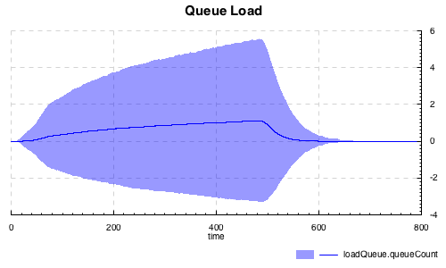

Aivika
Aivika – это платформа имитационного моделирования, состоящая из программных библиотек, которые позволяют использовать язык программирования общего назначения Haskell как высокоуровневый язык моделирования, главным образом, для дискретно-событийного моделирования, а также частично для системной динамики и агентного моделирования. Платформа оптимизирована для последовательного исполнения, вложенного моделирования и параллельного распределенного моделирования. Сложность концепций скрыта за легко используемыми вычислениями.
Просто создавать тренажеры
Вы можете создать тренажер, где вы можете определить модель и ее имитацию на языке Haskell, а затем создать десктопное приложение или веб-приложение на языках C++, C# или Java так, что приложение запросит параметры, запустит имитацию, а потом покажет результаты моделирования клиенту.

Имитационные эксперименты на основе метода Монте-Карло
Вы можете запустить численный эксперимент на основе метода Монте-Карло, чтобы провести анализ чувствительности модели к внешним параметрам. Aivika может создавать графики и гистограммы, сохранять результаты в файлах CSV, собирать сводную статистику, представлять визуальные результаты в виде файлов HTML. Тысячи имитационных запусков могут быть запущены параллельно, насколько возможно.
Вы можете увидеть это в следующем демонстрационном примере с графиками.
Единый подход для последовательной, вложенной и распределенной имитации
Наиболее удивительная вещь состоит в том, что Aivika поддерживает не только последовательную имитацию, но существуют также версии для вложенного моделирования и параллельного распределенного моделирования на основе оптимистичного метода деформации времени, что позволяет строить очень сложные модели. Везде используется единый подход.
Много-методные и общего назначения
Все версии Aivika являются общелевыми библиотеками дискретно-событийного моделирования, включая распределенную версию. Все они поддерживают время-ориентированную, событийно-ориентированную и процесс-ориентированную парадигмы. Также они поддерживают такие продвинутые приемы как вытеснение ресурса. Вы можете как углубляться в детали поведения моделируемых активностей, так и определять довольно сложные системы массового обслуживания простым декларативным способом.
Оптимизированная последовательная имитация
Основная версия Aivika оптимизирована для последовательного исполнения, и она может быть достаточна для большинства случаев использования. Она довольно быстрая и простая в использовании.
Оптимистичная распределенная имитация
Распределенная версия Aivika медленнее до 6-9 раз основной последовательной версии на эквивалентных последовательных моделях. Это совсем не значит, что любая распределенная имитация будет иметь такую скорость, потому что передача сообщений понижает скорость имитации, а иногда существенно замедляет ее, если возникает много откатов. Но эта грубая оценка показывает, какие преимущества можно получить, если грамотно использовать современные многоядерные процессоры и многокомпьютерные системы. Это так заманчиво думать об этом, учитывая что процессоры Intel Core X с 36-ю ядрами становятся реальностью уже сейчас!
Восстановление распределенной имитации
Aivika способна восстанавливать распределенную имитацию после временных ошибок соединения, что позволяет строить распределенные системы, используя обычные дешевые компьютеры, соединенные с помощью обычных сетей. Предполагается, что ошибки соединения неизбежны в сложных конфигурациях, и следовательно, мы должны уметь обрабатывать их.
Вы можете проверить это сами, запустив следующий тест распределенной имитации.
GPSS-подобный предметно-ориентированный язык
Также существует модуль, который поддерживает GPSS-подобный встроенный предметно-ориентированный язык, который может быть полезен, если вы собираетесь перенести ваши модели GPSS в Aivika. Этот язык не эквивалентен полностью, но довольно близок к оригинальному языку GPSS. Так, поддерживается большинство моделирующих блоков, таких как PREEMPT и даже GATHER.
Взгляните, пожалуйста, на следующий пример GPSS, который показывает, как можно использовать этот GPSS-подобный предметно-ориентированный язык.